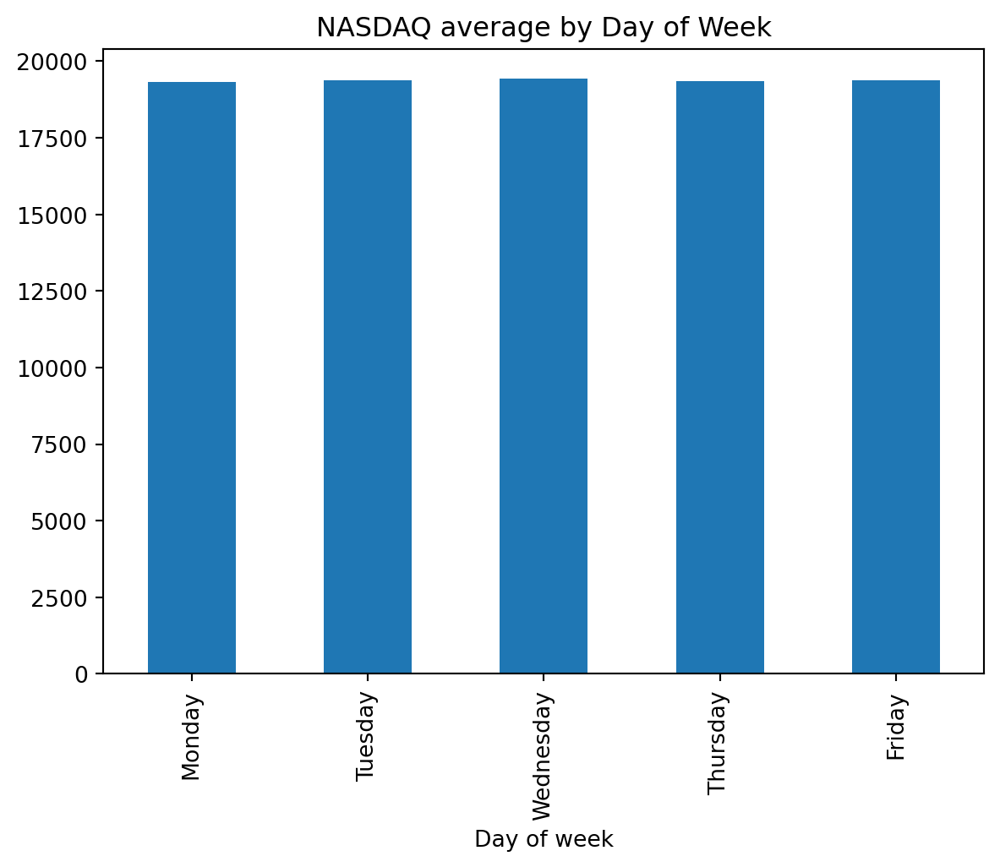
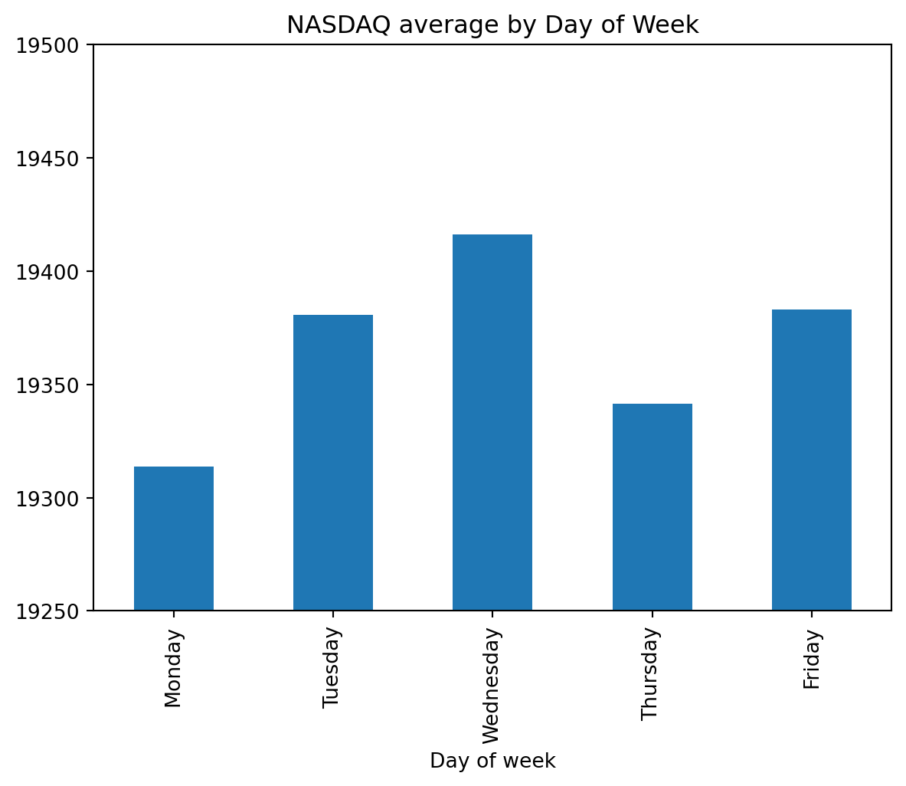

import pandas as pd
import matplotlib.pyplot as plt
df = pd.read_csv("C:\\Users\\Isaac\\OneDrive\\Documents\\fall 2025 semester\\STAT 386\\HistoricalData_1758833379259.csv")Data Wrangling Tutorial
Tutorial for wrangling and analyzing data
Have you ever wondered if you can predict the stock market? If you can predict the future, even? Of course, nobody knows for sure, and this tutorial is NOT meant for someone to perfectly predict when the stock market, or anything, will increase, or decrease. However, by learning how to properly wrangle and analyze data, somebody can make an investment, or life, decision with a better understanding of these things. This tutorial is meant to teach people to properly wrangle and organize data in a way that they can glean information from it, allowing them to make educated decisions.
Step 1: Choose your dataset. This can be a dataset of anything you’re interested in learning more about. For this tutorial, we will be working with this dataset of NASDAQ stock market prices by day and month, and analyzing its average price by day of the week.
We read the dataset into the code with this:
Great! Now that you’ve got it read in, we can start playing with it.
print(df.head()) Date Close/Last Open High Low
0 9/24/2025 22497.85 22656.02 22657.45 22397.00
1 9/23/2025 22573.47 22782.72 22785.13 22539.04
2 9/22/2025 22788.98 22606.59 22801.90 22590.86
3 9/19/2025 22631.48 22554.32 22645.11 22497.71
4 9/18/2025 22470.73 22439.11 22540.93 22358.49allows you to see the first few rows of the dataset.
Step 2: Wrangle and clean the data. The dataset will inevitably have certain things that you don’t care about, or that you don’t want to sue. You will have to remove certain rows and columns from the data, as well as certain parts that might have N/A or empty values in them. You will also have to perform some transformations. For this dataset, we will have to trim down the dataset, as it is very large, and figure out what the days of the week are for each date in the dataset
df_last_year = df.iloc[:365]This command, .iloc[], made it so the dataset is now only the top 365 rows (0 to 364), so that now we only have the last year in our dataset, and the rest is trimmed out. Now we must figure out how to change the date values into the names of days of the week. Eventually, we will hope to see what the average stock price is for each day of the week.
df_last_year["Date"] = pd.to_datetime(df_last_year["Date"])This code makes sure that it in the dataset, the dates are recognized as acutal days, not as just some weird numbers. Now we will create a column in which the names of the days are listed, as in days of the week. For the sake of organization, I will move the column of day names to the left side.
df_last_year["Day of Week"] = df_last_year["Date"].dt.day_name()
df_last_year.insert(0, "Day of week", df_last_year["Day of Week"])
df_last_year = df_last_year.drop(df_last_year.columns[6], axis=1) Now let’s check that we did our code correctly:
print(df_last_year.head()) Day of week Date Close/Last Open High Low
0 Wednesday 2025-09-24 22497.85 22656.02 22657.45 22397.00
1 Tuesday 2025-09-23 22573.47 22782.72 22785.13 22539.04
2 Monday 2025-09-22 22788.98 22606.59 22801.90 22590.86
3 Friday 2025-09-19 22631.48 22554.32 22645.11 22497.71
4 Thursday 2025-09-18 22470.73 22439.11 22540.93 22358.49Looks good! I created the day of week column, and removed it from the end, inserting it instead on the far left where it looks more natural.
Now we will further filter the dataset to prepare to create a table, showing the average value of the NASDAQ for each day ofht eweek. For this I will want to remove the “Date”, “Open”, “Low”, and “High” columns as we will use “Close/Last” as the value to measure a day’s sotck value by.
df_last_year = df_last_year.drop(['Date', 'Open', 'High', 'Low'], axis=1) And let’s check again that those columns were removed properly:
print(df_last_year.head()) Day of week Close/Last
0 Wednesday 22497.85
1 Tuesday 22573.47
2 Monday 22788.98
3 Friday 22631.48
4 Thursday 22470.73Perfect!
Now I want to make the table. I will do this by using the groupby function in python to group all of the days together. I will then create a column of the average value for each day.
df_day_avg = df_last_year.groupby('Day of week')['Close/Last'].mean().reset_index()
print(df_day_avg) Day of week Close/Last
0 Friday 19383.032400
1 Monday 19313.610000
2 Thursday 19341.598776
3 Tuesday 19380.594808
4 Wednesday 19416.199216Step 3: Perform EDA (Exploratory Data Analysis). Once you have your dataset, you want to visualize it. There are lots of different ways we can visualize it, so think about what way would make the most sense. Do you want a bar chart? Scatterplot? For this example, we will use a bar chart becuase it makes sense to use one to compare the stock market prices on each day of the week over a period of time. We can see what the average stock closing price is over a year’s worth of Sundays, Mondays, etc.
order = ["Monday", "Tuesday", "Wednesday", "Thursday", "Friday"]
df_day_avg["Day of week"] = pd.Categorical(df_day_avg["Day of week"], categories=order, ordered=True)
df_day_avg = df_day_avg.sort_values("Day of week")
df_day_avg.plot(kind="bar", x="Day of week", y="Close/Last", legend=False, title="NASDAQ average by Day of Week")
Here’s the graph, with the days in order from left to right. While there is a difference, it is so small compared to this scale that it is hard to see any differences at all. Let’s scale the bar chart differently so that we can see the differences more easily:
day_plot = df_day_avg.plot(kind="bar", x="Day of week", y="Close/Last", legend=False, title="NASDAQ average by Day of Week")
day_plot.set_ylim(19250, 19500)
day_plot
Here, we can see it scaled differently from 19250 to 19500, and at this scale we can see that certian days of the week have higher average values than others, over the last two years. Though the difference is overall still pretty small, we can see there is a difference, and it looks like it is highest on Wednesdays, while lowest on Mondays.
Step 4: What does it look like? Analyze what trends may be interesting or significant about your graphic, and data. We can analyze these things and conlcude that perhaps stock market trends can vary by day of the week. Perhaps this could influence our decisions regarding investing money, and when would be best to do so. On the other hand, the differences are not very large, and most people invest for the long term, so the information may not be so useful, but it is interesting to see that the value is higher some days more so than others. Regardless of the data we are analyzing, it is interesting and useful to use these techniques to wrangle data and discover new things.
Call to action: Try this out yourself! With a dataset, follow these steps to wrangle it, whittling it down to what you want to measure specifically. Finish by creating a meaningful graphic that measures what you’re studying in a visual way. Comment with your results!
Dataset source: https://www.nasdaq.com/market-activity/index/comp/historical